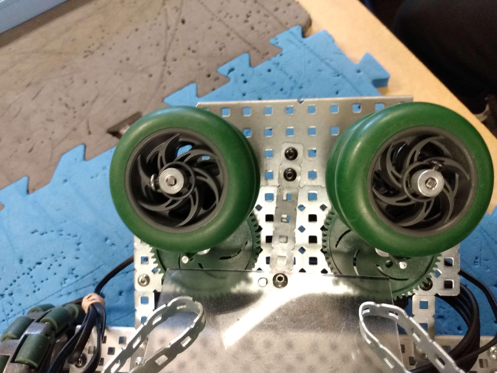
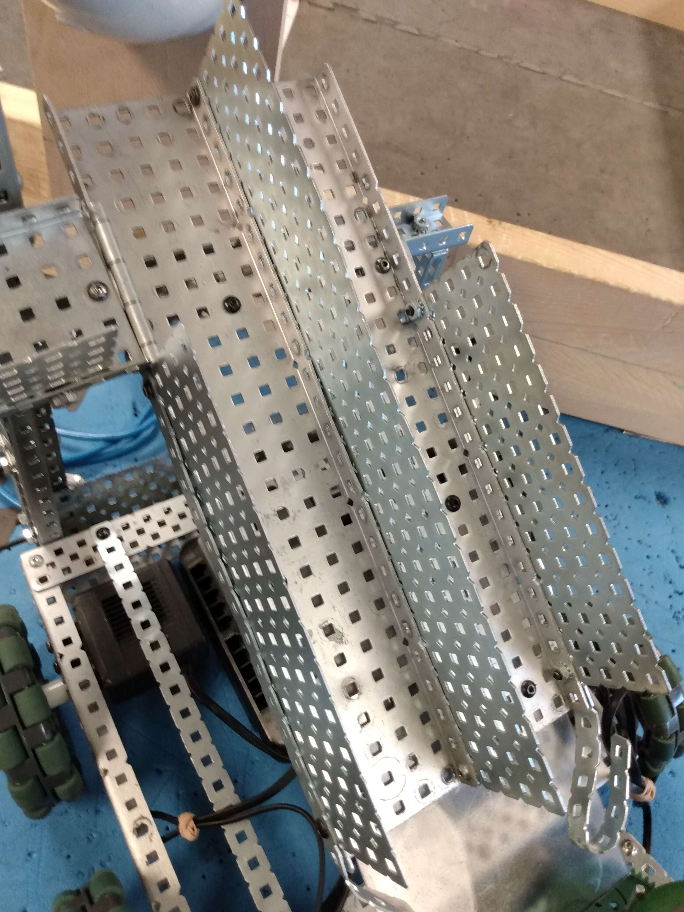
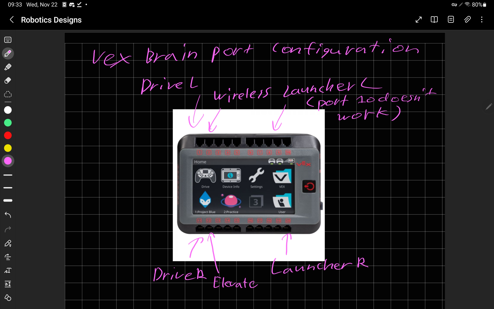
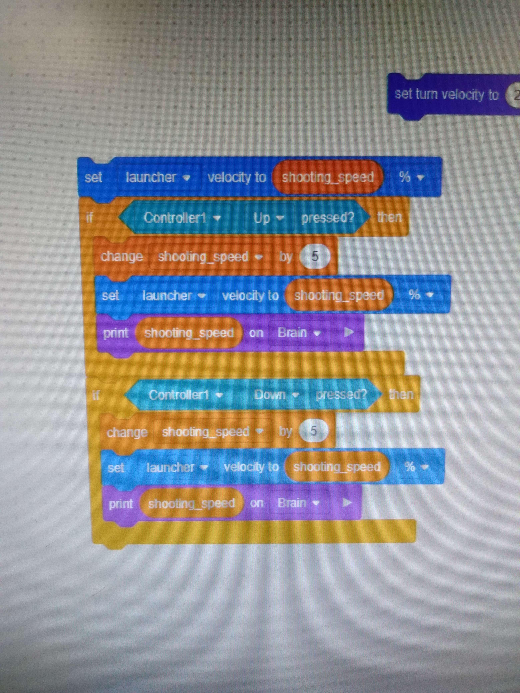
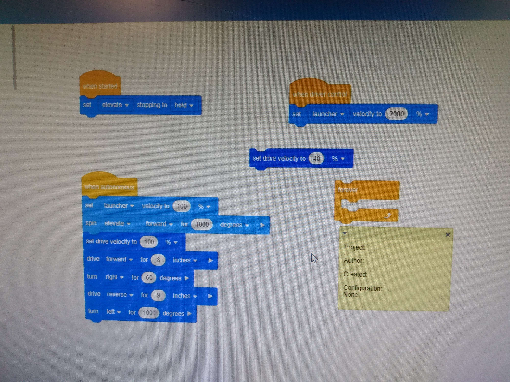
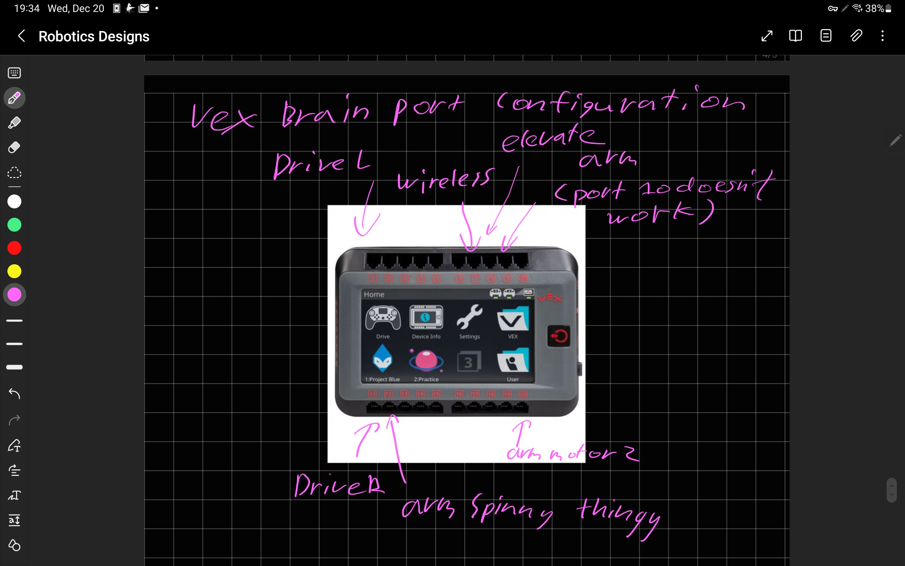

Logs
2023-10-11
Alex
I spent most of the day working on the website with Nathan >_< <-- Added by James. I added things like table of contents, resources, and updated the styling of much of the website.
Nathan
I spent most of the day working on the website with Alex. I added things like underlines, borders, margins, and most of the styling of the website.
Amitoj
I made some design decisions like keeping the base light so itd be easier to lift. After a bit, I decided on what it was going to be like and i started making the frame of the base.
James
I made a super cool animated logo and enter page that we should definitely add onto the site! I worked on our drivetrain.

2023-10-13
Alex
I spent most of the day working on the website with Nathan. I added a teams properties section.
Nathan
I spent most of the day working on the website with Alex. I attempted to add a css element called grid, but we realized that it would be too much work and scrapped it.
Amitoj
I underestimated how bulky the motors and battery are so I had to redo the side frame and the layout.
James
I spent part of today convincing Nathan and Alex to put the logo I made as an enter screen to our website. It didn't work.

2023-10-16
Alex
As per James' request, I added an intro screen. I also helped Nathan with robot design ideas.
Nathan
I stole Alex's tablet and started drawing a bunch of ideas for the intake system, launch system, etc.
Amitoj
rear wheel drive = drifting woohoo!!!
James
My logo finally got added to the website. I worked on our shooting system.

2023-10-18
Alex
I removed the intro screen.
Nathan
I continued drawing ideas on the stolen tablet I obtained from Alex's backpack.
Amitoj
Did some more adjustment stuff and tightened up the screws.
James
I started making our elevate program.
2023-10-24
Alex
I was sick but I decided to work on the website anyways. I migrated the website to robots.thearchons.xyz which runs on my own server. I also wrote a script to automatically update the website from the git repository.
Nathan
Alex was sick so I worked on the website all by myself. (Nathan is literally lying - Alex) Initial Engineering Notebook is due today!!!!
Amitoj
I started working on bringing all the separate parts together.
James
I helped a lot with the website :3 I also secured our robot more.
2023-10-25
Alex
insert log here
Nathan
We worked on the robot launch system, orginally going for an arm design, but then we realized that a baseball pitcher machine type launcher would be more effective. [Insert image 1, 2 here]
Amitoj
stuff continued
James
More work on our elevate, fixed it and makes it consistent and safe.
2023-10-27
Alex
I was sick. sowwy
Nathan
Alex was sick so I worked on the website all by myself.
Amitoj
Felt like a garbage fire so did some work and then fell asleep.
James
I helped a lot with the website :3
2023-11-03
Alex
I worked on the launching system with Amitoj, but the system is not strong enough. We will prioritize making the launching system stronger.
Nathan
This week was full of me just building a bunch of our ideas, including a launch system, a funnel, and figuring out how to attack things properly.
Amitoj
I worked on the launching system with Alex and tested out a bunch of kfroi's other ideas.
James
Made our shooting system a bit more consistent. I might need to make a whole new one unfortunately. All changes I added to website in the past week were promptly removed without notice *sigh*
2023-11-08
Alex
We fixed the launching system, using a gear ratio to increase the speed of the launcher. We also changed to blue motors, which has a higher rpm. The gears can be seen under the wheels.
Nathan
I continued to improve the funnel, going from a literal tunnel to this cool thing.
Amitoj
What day is it?
James
Began creating our new scoring system. Going to be an elevator.
2023-11-14
Alex
I made last minute changes to the robot during lunch, including improving the loading system by adding a ramp for the ball to roll on instead of relying on luck to load balls.
Amitoj
Added some last minute with Alex at lunch. I got some pieces and made a system and he refined everything we had.
James
Making our robot secure and efficient, one nut and bolt at a time
2023-11-22
Alex
I redid the wiring to make the robot look nicer and to make it easier to work on the robot. I also redid the port configuration because the old one did not make sense. Below is a diagram with the ports. 
Nathan
I worked on some of the code with Alex, and we realized that some of the code wasn't going to work.
Amitoj
Did some fine tuning stuff like making sure all the screws were tight and worked with Alex on cleaning up the wiring
2023-11-29
Nathan
We did some work off camera.
2023-12-05
Nathan
We fixed the code. Here is what it looks like now!
Amitoj
Just helped the guys out with testing the autonomous, nothing too hard or annoying
2023-12-06
Nathan
Competition day! We did pretty well, but we had some issues with the robot. We had to fix the robot a few times, but we managed to get it working again. We got Champion, but our autoloader balls failed once. We fixed the centerline cross during the tournament though. We also failed inspection, because the bar we used to release the balls was too long, and our claw was too tall.
Amitoj
Our elevate system broke off the rest of the robot so we had to fix that. We tried to reattach it in different ways but realized there were other parts of the robot in the way, so we had to take a decent bit apart to reattach the parts we wanted to
2023-12-12
Alex
Competition at Enver is tomorrow!. We made our robot pass inspection, but our autonomous doesn't fully work now because of that. I fixed some of it with Nathan, but it only sometimes works. Below is a video of us testing autonomous.
2023-12-13
Alex
We participated in the competition at Enver Creek! We ended up doing pretty well, getting into semifinals. However, here are some issues we had:
- One of our drive wheels came loose
- Our autonomous often failed
- Our shooting system was not accurate enough to be useful
- For the first half, our elevate system was too short. We fixed this during the competition.
2023-12-15
Alex
Today, Nathan, James, and I removed the shooting system, because we decided to use an elevator system rather than a shooting one. This is because at the competition we noticed the robots that performed well were the ones who lifted the balls into the goal rather than shooting it, because shooting systems were not accurate enough. We also redid some of the wheels, and they should not fall off anymore. Thirdly, we discussed how to build the scoring system, which they partially built.
Nathan
Throughout this week, I have been literally working on the bot nonstop, trying to get the forklift idea we have on the bot and also repositioning the elevate so that it would work out.
James
I worked with Nathan the whole time.
Amitoj
I got some extra sleep.
2023-12-18
Alex
I helped James and Kfroi with the robot. We added the elevate system back onto the bot, but this time in the middle. Also, we decided to use an arm to lift balls into the goal rather than shooting them. This will require us to travel back and forth between the human feeder and goal, but it should be much more accurate.
Nathan
I helped James and Alex with the robot. We added the elevate system back onto the bot, but this time in the middle. Also, we decided to use an arm to lift balls into the goal rather than shooting them. This will require us to travel back and forth between the human feeder and goal, but it should be much more accurate.
James
I helped Alex and Kfroi with the robot. We added the elevate system back onto the bot, but this time in the middle. Also, we decided to use an arm to lift balls into the goal rather than shooting them. This will require us to travel back and forth between the human feeder and goal, but it should be much more accurate.
Amitoj
I played some clash royale to warm up, then started working on the website like a pro.
2023-12-20
Alex
I worked more on our new scoring system, and programmed a bit as well. Since a lot of motors got moved around and replaced, here is the new port diagram: 
Nathan
I helped secure the robot and disassemble the old scoring system.
James
I worked on the scoring system with Alex, along with securing it and testing the robot.
Amitoj
I did stuff on the robot and didnt play clash royale at all